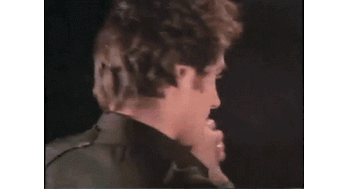

I answer the phone and am immediately greeted by a warm, polite, and unmistakably British voice: "Hello. This is Timothy Dalton." Dalton quickly launches into a string of apologies, as he's calling several hours after our scheduled interview time, which he forgot because he was driving his children to school. "I'm mortified," he reiterates, repeatedly, throughout our conversation.

Dalton is revelatory as the haunted, haunting Sir Malcolm, who assembles a group of misfits that includes Vanessa Ives (Eva Green), Ethan Chandler (Josh Hartnett), and Victor Frankenstein (Harry Treadaway) to explore what he calls "the place where science and superstition go hand-in-hand." Dalton himself isn't much of a horror fan, and he thinks for a long time before coming up with another piece of horror fiction that he admires. ("The first thing that comes to my mind is the original Alien, where you never saw the damned alien until the end. That was pretty scary.") He's also skeptical of television; in an interview with Entertainment Weekly several years ago, Dalton said that he doubted he'd ever take a recurring role in a TV series because he thinks he "would find it difficult to do the same thing year in and year out." With all that in mind, I had to ask: What was it about Penny Dreadful that turned his head?
"How much good writing is there around these days?" he asks. "There are some terrific movies made. Great TV? There is good writing in TV, and some splendid writing in TV. But it's not common. So when it's in front of you, and it's good, and you've got someone like [writer and showrunner John Logan], and someone like [director J.A. Bayona] doing the first two episodes… You've got to do it. You can't say no, really. You could — but you shouldn't."
But as an actor, Dalton remains wary about the boredom that could come with playing the same character for too long.
"Once you've created a character… once you've done it, once you've taken on that challenge — and hopefully been successful — what is the joy of repeating it? I don't know that there is any joy in repeating it. Once you've done a few weeks in the West End or on Broadway, and you've really got to grips with a serious piece of work, there's got to come a moment when it loses some of its challenge because you've already done it. You've climbed the mountain."
Dalton waves away the idea that the fear of stagnation was a part of his relatively short tenure as 007. "That was my worry going into the James Bond franchise, certainly," he explains. "But it wasn't why I left." That doesn't mean he didn't have some concerns about the franchise: "On [Licence to Kill], I think I saw the script about two weeks before we started shooting. You know, that's not great, is it?"
Licence to Kill wasn't supposed to be his final James Bond movie; a third 007 movie, which would have starred Dalton, entered preproduction in 1990. "We had the script. They were interviewing directors. We were really rolling forward, ready to start. It was actually quite a good story, I thought," says Dalton. But a lengthy legal dispute between Eon Productions and MGM delayed the film indefinitely — and gave Dalton an out. "Because of the lawsuit, I was free of the contract," Dalton explains. "And [producer] Mr. Broccoli, who I really respected as a producer and as a friend, asked me what I was going to do when it was resolved. I said, 'Look, in all honesty, I don't think that I will continue.' He asked me for my support during that time, which of course, I gave him."
But when the lawsuit was resolved several years later, Dalton had a change of heart.
"When [the next movie] did come about, it was probably four or five years later," he explains. "[Broccoli] asked if I would come back, and I said, 'Well, I've actually changed my mind a little bit. I think that I'd love to do one. Try and take the best of the two that I have done, and consolidate them into a third.' And he said, quite rightly, 'Look, Tim. You can't do one. There's no way, after a five-year gap between movies that you can come back and just do one. You'd have to plan on four or five.' And I thought, oh, no, that would be the rest of my life. Too much. Too long. So I respectfully declined." When Goldeneye hit theaters in 1995, it was Pierce Brosnan in the starring role.
In the years since, Dalton has turned in strong performances in everything from Hot Fuzz to Toy Story 3 — but Penny Dreadful is the meatiest role he's had in a while, and he's clearly relishing the depth and complexity that comes with playing Sir Malcolm Murray.
"Vanessa, in a later episode, describes him as weak, foul, lustful, vainglorious," he explains. "You could add into that obsessive, manipulative, ruthless. You could also add in compassionate and courageous and all sorts of things. […] But this could be true about all of us, at certain moments of our lives, because human beings are such complex creatures. Actors, sometimes, they look for a character and they just want to play one thing. But human beings are so multifaceted, you know? We carry with us our good and our evil."
Once again, we've taken a philosophical detour — but Dalton hastens to get back on track. "Let me bring it back to Penny Dreadful," he says.
"You have to have characters you believe in, characters you empathize with. You have to have truth. And then you take them on a really interesting and scary journey. We are human beings watching, and we do have to empathize. I think that's what we're doing, and I hope that's what we're doing in Penny Dreadful. Showing an audience that all of these people are humans. Even if they're warped, even if they've got great problems. They're human beings, and they're trying to come to terms with themselves."
He pauses, then laughs. "But that's the boring side. On the other hand, you could say, 'All the good-looking people! Blood! Sex! Violence!' And fortunately, we've got it all."
